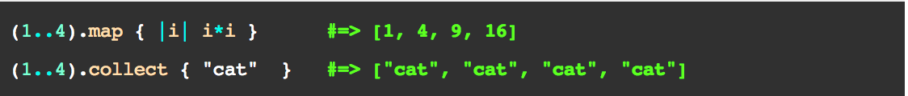

Use The Map!
The #map method in Ruby is quite a useful method for transforming enumerable objects or arrays. Here's what it might look like to use the map method:

Broken down, this is what it does:
It takes an array, does whatever you tell it to "do" (aka runs the block), and returns a new array that has been transformed by what you told it to "do."
Map and Map!
The map method can either give you a result that shows a new array and leaves the original unchanged, or it can transform the original array. By simply writing #map! instead of #map, you would change the original array.
Collect or Map?
The map method and the collect method are apparently two different names for the same method. They both do essentially the same thing, so you can use whichever you prefer.
Real life example (sort of):
So, let's say you have an array that is a list of your favorite Nabisco cookies. You get a weird feeling that you'll be sued by Nabisco if you don't include their name in front of each type of cookie. You decide the best way to do it would be to transform the array with a destructive map (the kind with the ! that changes the original array), so you write a block that puts "Nabisco's" in front of each type of cookie. Boom done.
But really...
More likely you would use the map method in debugging your own code or changing all elements in an array easily. For example, you might want information about an array, like how many even or odd numbers there are. You could use the map or collect method and do that in one line to find out. Or maybe you want to add 1 to each of the numbers in an array because you forgot to account for yourself in a list of class sizes you created. Use the #map! method to transform your original array and leave the rest of your code alone.